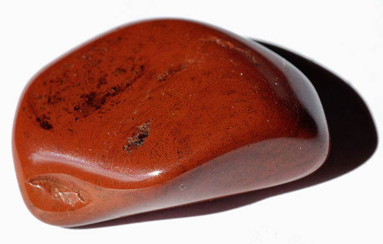

SCP-113

- Item nº:
- SCP-113
- Classe do objeto:
- Safe
Procedimentos Especiais de Contenção:
O SCP-113 deve ser mantido em armazenamento padrão no Site-23. O SCP-113 pode ser manuseado com luvas de laboratório. Nenhum organismo pode ser exposto ao SCP-113 sem aprovação prévia. O pessoal exposto ao SCP-113 deve ficar sob observação médica por 7 dias.
Descrição:
O SCP-113 se assemelha a um pequeno pedaço polido de jaspe vermelho. A análise mostra que o SCP-113 não é composto de jaspe, mas de uma composição [REDIGIDO] semelhante à de outros objetos recuperados.
Quando o SCP-113 entra em contato direto com a carne de um organismo que possui cromossomos sexuais, as características físicas do organismo associadas ao gênero e ao sexo biológico são transformadas (incluindo a genética e as características sexuais secundárias), seja invertidas ou alteradas.
Esse processo ocorre em quatro etapas:
- Etapa 1: Dura aproximadamente 0,2 segundo. O SCP-113 se liga às células que toca e induz uma mudança química não identificada. Esse processo causa danos nos tecidos semelhantes a queimaduras leves, e o SCP-113 não pode ser retirado do contato com o sujeito até que todas as etapas se completem.
- Etapa 2: Dura aproximadamente 20 segundos. O SCP-113 emite uma onda eletromagnética de baixa intensidade que atravessa o corpo do sujeito. Os sujeitos podem sentir náusea e vômito, além de uma sensação de ardência por todo o corpo.
- Etapa 3: Dura aproximadamente 60 segundos. Durante essa etapa, a composição celular do sujeito é temporariamente transformada. A composição celular alterada varia amplamente, de não identificável como humana a uma variação única de células-tronco parcialmente diferenciadas. O sujeito sente intensa estimulação de todos os nervos sensoriais durante os últimos 20 segundos dessa etapa e descreve essa parte do processo como extremamente dolorosa. Sujeitos em mau estado de saúde podem morrer de choque nessa etapa.
Ao fim dessa etapa, o sexo biológico do sujeito é alterado de forma permanente. Nos casos padrão, o sexo biológico do sujeito muda para o sexo biológico oposto. Todas as características sexuais primárias e secundárias são alteradas de acordo.
- Etapa 4: O SCP-113 se desliga do sujeito e se torna inerte.
Sujeitos com cromossomos sexuais atípicos para a sua espécie (como humanos intersexo) são afetados pelo SCP-113 de maneiras imprevisíveis. Em sujeitos humanos intersexo, isso parece ser influenciado pela identidade de gênero; esses sujeitos podem não ser afetados, ou seus corpos podem mudar para corresponder a corpos masculinos ou femininos de referência (com cromossomos sexuais correspondentes), ou outros resultados podem ocorrer. Em geral, a mudança parece corresponder total ou parcialmente à identidade de gênero do sujeito durante o uso inicial, se a identidade de gênero for não padrão. Se o SCP-113 altera seu efeito com base na presença de uma identidade de gênero não padrão está sob investigação.
A identidade de gênero de sujeitos humanos normalmente não é alterada pelo SCP-113. Em sujeitos com identidades de gênero não padrão (normalmente identidades de gênero que não correspondem ao seu sexo biológico antes da exposição), isso costuma resultar em efeitos psicológicos positivos. Em sujeitos com identidades de gênero padrão (masculino/feminino, correspondentes ao sexo biológico antes da exposição), os efeitos psicológicos costumam ser negativos. Essas parecem ser reações psicológicas naturais, e não um efeito anômalo do SCP-113.
A exposição ao SCP-113 resulta em efeitos incomuns em certas espécies. Na Varanus komodoensis (o dragão-de-komodo), vários indivíduos ZW/ZZ foram transformados para possuir cromossomos WW em vez de ZZ ou ZW, o que foi fatal em todos os casos. No Caenorhabditis elegans (um nematoide), nenhum macho foi produzido, apesar de o C. elegans ter dois sexos (hermafrodita e macho). Os sujeitos machos se tornaram hermafroditas, e os sujeitos hermafroditas não foram afetados. (Nota: em populações selvagens, os machos de C. elegans são extremamente raros.)
Sujeitos de espécies hermafroditas de sexo único (como minhocas) não serão transformados pelo SCP-113; o processo do objeto será interrompido na segunda etapa, e o objeto se tornará inerte.
Sujeitos previamente expostos podem passar novamente pelos efeitos do SCP-113 ao reiniciar o contato com ele depois de passados aproximadamente 60 segundos. No entanto, em 25% dos casos, a segunda exposição imediata ao SCP-113 não consegue transformar o sujeito corretamente. A falha na transformação varia de natureza, mas costuma incluir danos maciços aos ossos, órgãos e tecidos do sujeito, além da destruição parcial ou completa da genitália. Isso resulta comumente em morte por trauma de órgãos ou hemorragia interna.
A taxa de falha pode ser afetada pelo fato de os sujeitos ficarem sem contato com o SCP-113 por um período prolongado, que varia conforme o sujeito; os padrões estão sob pesquisa. Em circunstâncias normais, a taxa de falha na transformação aumenta exponencialmente com exposições múltiplas. Os sujeitos que sobrevivem a exposições rápidas e repetidas são por fim transformados [DADOS EXPURGADOS] Outros elementos anômalos continuam a surgir à medida que o número de exposições aumenta.